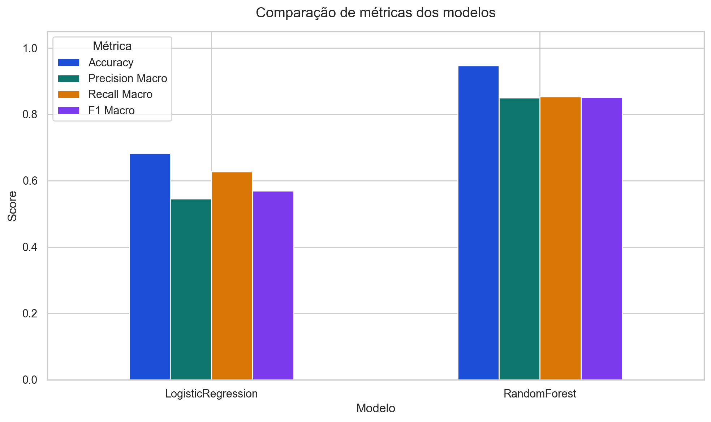

Visão geral
Shape do treino(16000, 15)
Shape do teste(4000, 15)
Coluna alvoGraduacao_Indicada
Modelos avaliadosLogisticRegression e RandomForest
Comparação de métricas
| Modelo | Accuracy | Precision Macro | Recall Macro | F1 Macro |
|---|---|---|---|---|
| LogisticRegression | 0.6828 | 0.5449 | 0.6274 | 0.5690 |
| RandomForest | 0.9470 | 0.8500 | 0.8531 | 0.8506 |

Melhor modelo
O melhor modelo foi RandomForest.
A escolha foi feita priorizando o F1 macro, porque a variável alvo é desbalanceada e essa métrica representa melhor o desempenho médio entre todas as classes. Em caso de empate, a accuracy foi usada como critério de desempate.
O modelo selecionado obteve F1 macro de 0.8506 e accuracy de 0.9470.
Classification report do melhor modelo
precision recall f1-score support
Administração 0.98 0.99 0.99 924
Ciência da Computação 0.91 0.89 0.90 151
Comunicação Social 0.51 0.62 0.56 42
Design 0.98 0.98 0.98 562
Direito 0.97 0.99 0.98 723
Educação Física 0.92 0.90 0.91 186
Engenharia 0.95 0.90 0.92 135
Licenciatura em Biologia 0.50 0.42 0.46 26
Licenciatura em Geografia 0.66 0.74 0.69 57
Licenciatura em História 0.76 0.83 0.79 89
Licenciatura em Matemática 0.90 0.90 0.90 143
Medicina 0.97 0.96 0.97 477
Odontologia 0.98 0.96 0.97 313
Psicologia 0.90 0.88 0.89 172
accuracy 0.95 4000
macro avg 0.85 0.85 0.85 4000
weighted avg 0.95 0.95 0.95 4000